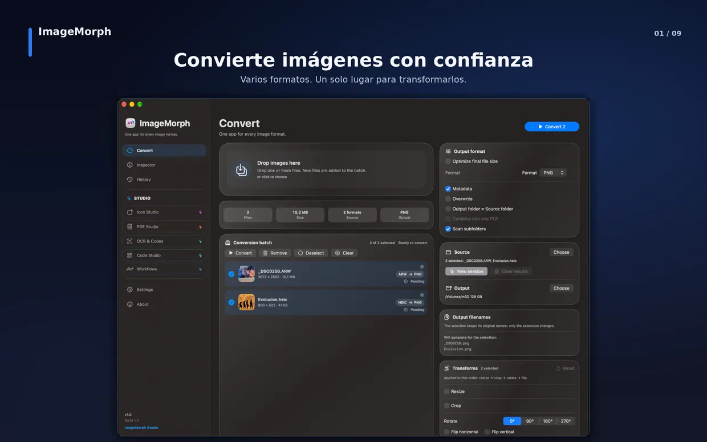
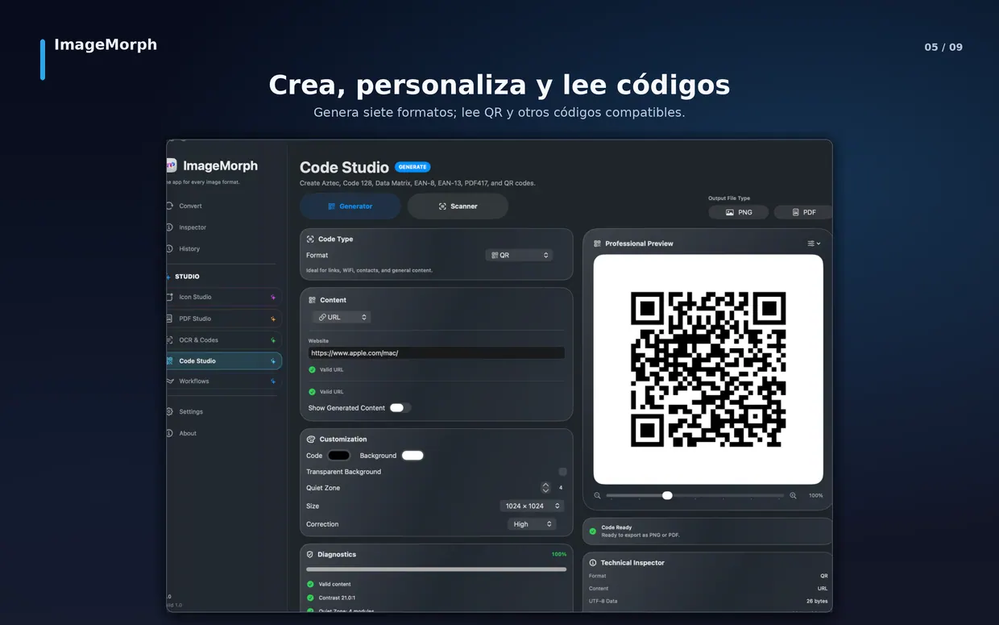
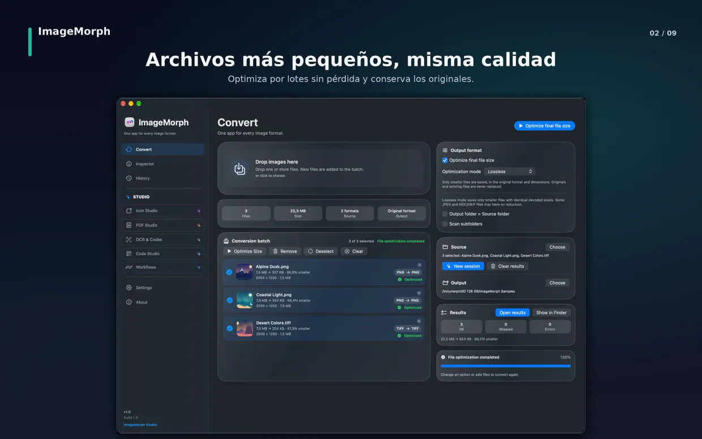
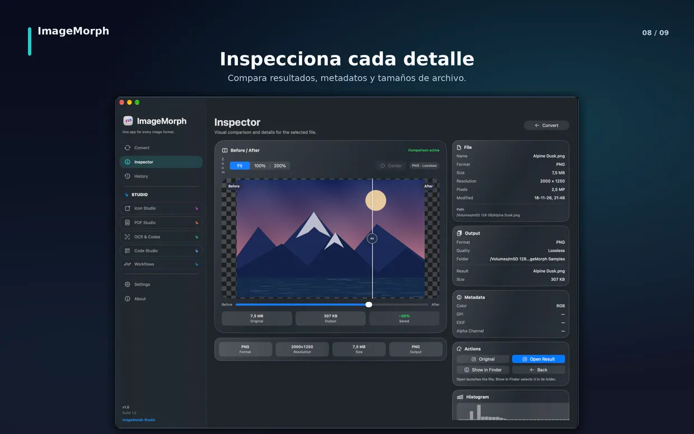
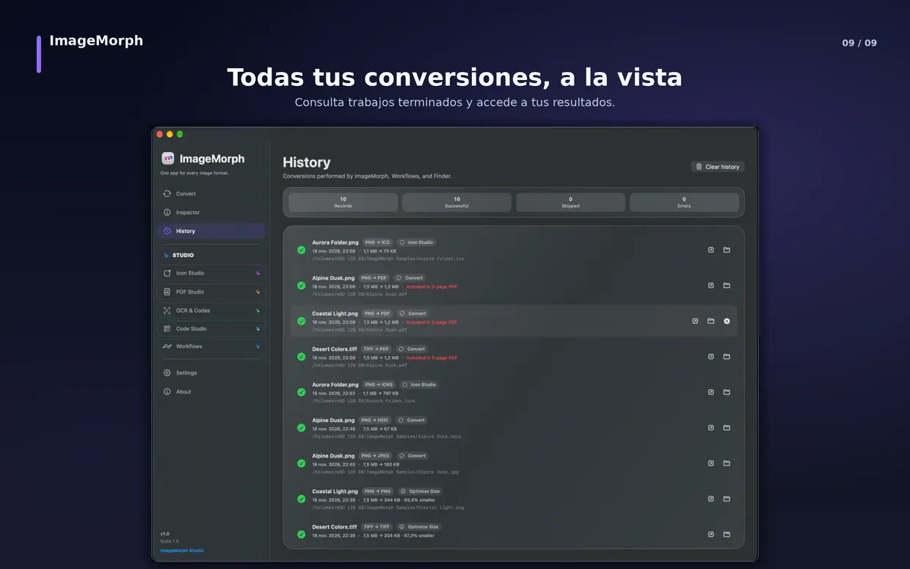
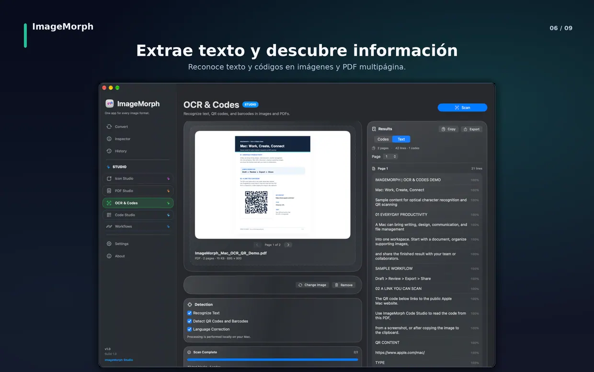
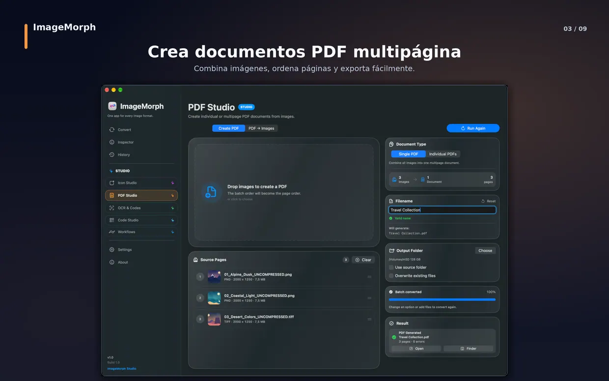
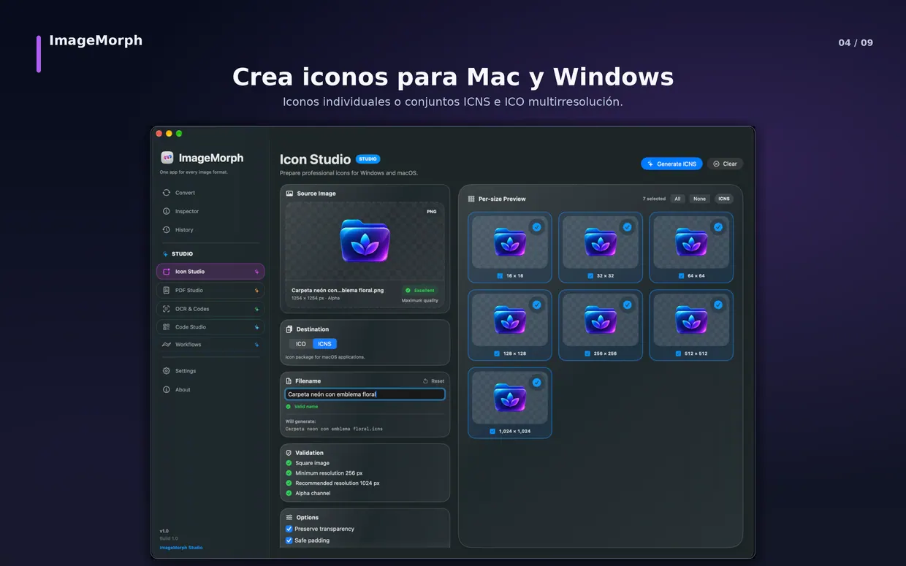
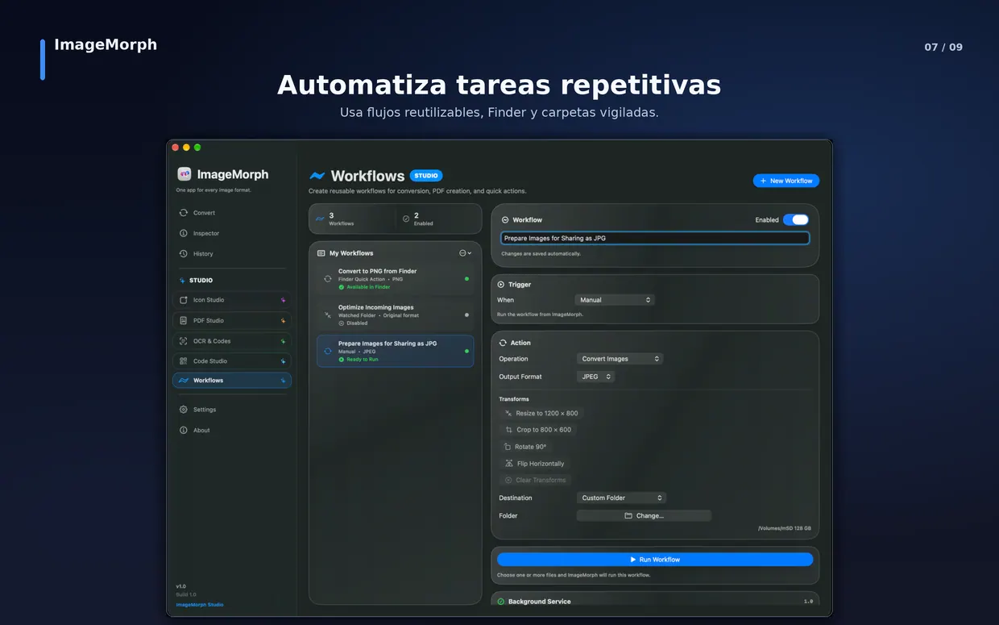

Convertir formatos
Formatos habituales como JPEG, PNG, HEIC y TIFF, en archivos individuales o lotes.

Convierte, redimensiona y optimiza imágenes. Crea PDF y automatiza tareas repetitivas en tu Mac.
Preparando el lanzamiento en Mac App Store.

Convierte, redimensiona y optimiza imágenes. Crea PDF y automatiza tareas repetitivas en tu Mac.

Reconoce texto en imágenes y PDF de varias páginas; revisa y exporta los resultados.
¿Te enviaron un código QR por correo o aparece en un PDF? ImageMorph Studio te ayuda a leerlo en tu Mac y a revisar la dirección de destino antes de abrirla.


Ver el destino ayuda a detectar señales sospechosas, pero no garantiza que un sitio sea seguro. Comprueba el dominio y evita entregar datos personales en páginas inesperadas.
Ver herramientas de códigosFormatos habituales como JPEG, PNG, HEIC y TIFF, en archivos individuales o lotes.

Cambia las dimensiones y proporciones de tus imágenes para adaptarlas a distintos usos, conservando el control del tamaño final y la relación de aspecto cuando lo necesites.

Optimización sin pérdida o con pérdida, según el formato: solo se crea salida si es menor.

Explora las propiedades de imágenes y PDF: formato, dimensiones y metadatos. Después de convertir, compara el resultado con el original para evaluar los cambios.

Consulta las operaciones recientes, revisa sus resultados y abre los archivos generados o muéstralos en Finder, siempre que todavía existan en su ubicación.

Studio reúne OCR, lectura de códigos, herramientas PDF, iconos y automatización. Compra única, sin suscripción.
Studio es una compra integrada opcional y permanente.

Reconoce texto en imágenes y PDF de varias páginas; revisa y exporta los resultados.


Lee códigos desde el portapapeles, imágenes, archivos PDF o carpetas; también puedes capturarlos con cámaras y escáneres compatibles. Inspecciona su contenido y los enlaces antes de decidir qué hacer con ellos.


Crea PDF multipágina, exporta páginas como imágenes y ajusta selección y rotación.

Genera archivos ICO e ICNS y comprueba los tamaños antes de exportar.


Crea QR, Code128, Data Matrix, EAN, PDF417 y Aztec; exporta PNG o PDF.

Guarda flujos, supervisa carpetas y ejecuta acciones desde Finder.

Studio es una compra integrada opcional y permanente.
Preguntas sobre Studio| Función | Free | Studio |
|---|---|---|
| Conversión, tamaño y optimización | Incluido | Incluido |
| Cola, Inspector, comparación e histograma | Incluido | Incluido |
| Creación básica de PDF | Incluido | Incluido |
| PDF Studio y exportar páginas como imágenes | — | Incluido |
| OCR y reconocimiento de códigos | — | Incluido |
| Generación de códigos y captura con cámara o escáner | — | Incluido |
| Iconos ICO e ICNS | — | Incluido |
| Flujos, carpetas vigiladas y acciones rápidas de Finder | — | Incluido |
El precio localizado, el acceso a Studio y la elegibilidad de prueba se muestran en la app. Las compras y restauraciones utilizan los servicios de Apple.
La conversión, optimización, creación de PDF y OCR se realizan en tu Mac. El contenido de tus archivos no se envía al servicio de pruebas de Studio. El acceso a archivos, carpetas, cámaras y escáneres requiere permisos; ajustes, historial, marcadores y registros con nombres, rutas o errores pueden guardarse localmente.
Leer política de privacidad